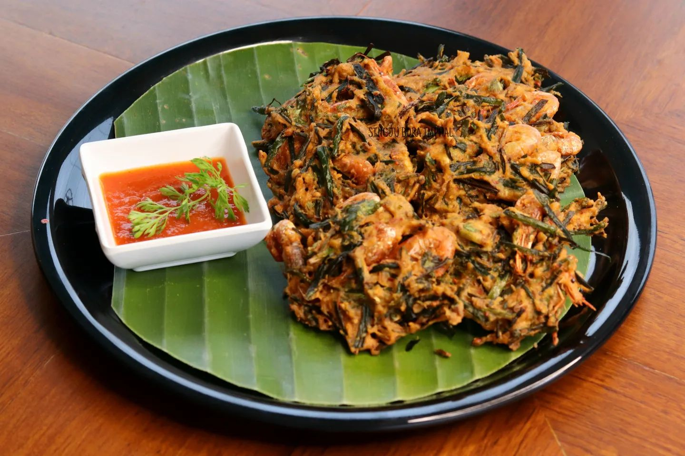

Bora

Bora, often termed as Singju Bora or Kanghou Bora, is a Meitei Manipuri ethnic food item, prepared with oil fried vegetables. Other recipes may include fish flavor or prawn flavor. It is one of the most popular evening side dish in the Indian state of Manipur, especially among the Manipuri ethnicity.
Ingredients to make Bora:
- ½ cup besan (gram flour, more if needed)
- ¼ cup rice flour (or 2 tbsp corn starch, use more if needed proportionally with besan)
- ½ tbsp salt
- 3 green chilli peppers chopped or ½ to 1 tbsp red chilli flakes (adjust to taste)
- 2 tbsp mint leaves or coriander leaves or dill leaves chopped
- 1 tbsp ginger garlic paste or crushed ginger
- ¼ to ½ tbsp garam masala powder (optional)
- ½ tbsp carom seeds (ajwain, optional)
- Oil for deep frying as needed
Steps to make Bora:
- Heat oil in a deep pan on a medium heat, test by dropping a small portion of dough, it must sizzle and come up but not brown. This is the right temperature.
- Take small portions of dough and flatten with you fingers to 1½ inch size portions and gently slide to the hot oil. You won't shape it or drop it in lumps.
- Regulate the flame to medium. Do not disturb for a minute or 2 until they firm up a bit. Then stir them and fry until golden, crisp and aromatic.
- Remove the vegetable Bora to a cooling rack or steel colander. To make the next batch, ensure the oil is hot enough but not smoking hot. Fry in bathes until you finish all of the prepared dough.
- Serve vegetable Bora hot with a cup of masala tea, Coriander chutney or green chutney
- To keep them crispy for longer, place them on a wired rack in a low oven setting. You can also reheat them in air fryer.
Home